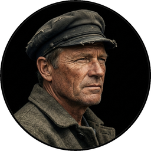

Cast of Characters
Click to hear their voice

CHAPTER I A SHIFTING REEF
The year 1866 was signalised by a remarkable incident, a mysterious and puzzling phenomenon, which doubtless no one has yet forgotten. Not to mention rumours which agitated the maritime population and excited the public mind, even in the interior of continents, seafaring men were particularly excited. Merchants, common sailors, captains of vessels, skippers, both of Europe and America, naval officers of all countries, and the Governments of several states on the two continents, were deeply interested in the matter.
For some time past, vessels had been met by “an enormous thing,” a long object, spindle-shaped, occasionally phosphorescent, and infinitely larger and more rapid in its movements than a whale.
The facts relating to this apparition (entered in various log-books) agreed in most respects as to the shape of the object or creature in question, the untiring rapidity of its movements, its surprising power of locomotion, and the peculiar life with which it seemed endowed. If it was a cetacean, it surpassed in size all those hitherto classified in science. Taking into consideration the mean of observations made at divers times,—rejecting the timid estimate of those who assigned to this object a length of two hundred feet, equally with the exaggerated opinions which set it down as a mile in width and three in length,—we might fairly conclude that this mysterious being surpassed greatly all dimensions admitted by the ichthyologists of the day, if it existed at all. And that it did exist was an undeniable fact; and, with that tendency which disposes the human mind in favour of the marvellous, we can understand the excitement produced in the entire world by this supernatural apparition. As to classing it in the list of fables, the idea was out of the question.
On the 20th of July, 1866, the steamer Governor Higginson, of the Calcutta and Burnach Steam Navigation Company, had met this moving mass five miles off the east coast of Australia. Captain Baker thought at first that he was in the presence of an unknown sandbank; he even prepared to determine its exact position, when two columns of water, projected by the inexplicable object, shot with a hissing noise a hundred and fifty feet up into the air. Now, unless the sandbank had been submitted to the intermittent eruption of a geyser, the Governor Higginson had to do neither more nor less than with an aquatic mammal, unknown till then, which threw up from its blow-holes columns of water mixed with air and vapour.
Similar facts were observed on the 23rd of July in the same year, in the Pacific Ocean, by the Columbus, of the West India and Pacific Steam Navigation Company. But this extraordinary cetaceous creature could transport itself from one place to another with surprising velocity; as, in an interval of three days, the Governor Higginson and the Columbus had observed it at two different points of the chart, separated by a distance of more than seven hundred nautical leagues.
Fifteen days later, two thousand miles farther off, the Helvetia, of the Compagnie-Nationale, and the Shannon, of the Royal Mail Steamship Company, sailing to windward in that portion of the Atlantic lying between the United States and Europe, respectively signalled the monster to each other in 42° 15′ N. lat. and 60° 35′ W. long. In these simultaneous observations they thought themselves justified in estimating the minimum length of the mammal at more than three hundred and fifty feet, as the Shannon and Helvetia were of smaller dimensions than it, though they measured three hundred feet over all.
Now the largest whales, those which frequent those parts of the sea round the Aleutian, Kulammak, and Umgullich islands, have never exceeded the length of sixty yards, if they attain that.
These reports arriving one after the other, with fresh observations made on board the transatlantic ship Pereire, a collision which occurred between the Etna of the Inman line and the monster, a procès verbal directed by the officers of the French frigate Normandie, a very accurate survey made by the staff of Commodore Fitz-James on board the Lord Clyde, greatly influenced public opinion. Light-thinking people jested upon the phenomenon, but grave practical countries, such as England, America, and Germany, treated the matter more seriously.
In every place of great resort the monster was the fashion. They sang of it in the cafés, ridiculed it in the papers, and represented it on the stage. All kinds of stories were circulated regarding it. There appeared in the papers caricatures of every gigantic and imaginary creature, from the white whale, the terrible “Moby Dick” of hyperborean regions, to the immense kraken whose tentacles could entangle a ship of five hundred tons, and hurry it into the abyss of the ocean. The legends of ancient times were even resuscitated, and the opinions of Aristotle and Pliny revived, who admitted the existence of these monsters, as well as the Norwegian tales of Bishop Pontoppidan, the accounts of Paul Heggede, and, last of all, the reports of Mr. Harrington (whose good faith no one could suspect), who affirmed that, being on board the Castillan, in 1857, he had seen this enormous serpent, which had never until that time frequented any other seas but those of the ancient “Constitutionnel.”
Then burst forth the interminable controversy between the credulous and the incredulous in the societies of savants and the scientific journals. “The question of the monster” inflamed all minds. Editors of scientific journals, quarrelling with believers in the supernatural, spilled seas of ink during this memorable campaign, some even drawing blood; for, from the sea-serpent they came to direct personalities.
For six months war was waged with various fortune in the leading articles of the Geographical Institution of Brazil, the Royal Academy of Science of Berlin, the British Association, the Smithsonian Institution of Washington, in the discussions of the “Indian Archipelago,” of the Cosmos of the Abbé Moigno, in the Mittheilungen of Petermann, in the scientific chronicles of the great journals of France and other countries. The cheaper journals replied keenly and with inexhaustible zest. These satirical writers parodied a remark of Linnæus, quoted by the adversaries of the monster, maintaining “that nature did not make fools,” and adjured their contemporaries not to give the lie to nature, by admitting the existence of krakens, sea-serpents, “Moby Dicks,” and other lucubrations of delirious sailors. At length an article in a well-known satirical journal by a favourite contributor, the chief of the staff, settled the monster, like Hippolytus, giving it the death-blow amidst an universal burst of laughter. Wit had conquered science.
During the first months of the year 1867 the question seemed buried, never to revive, when new facts were brought before the public. It was then no longer a scientific problem to be solved, but a real danger seriously to be avoided. The question took quite another shape. The monster became a small island, a rock, a reef, but a reef of indefinite and shifting proportions.
On the 5th of March, 1867, the Moravian, of the Montreal Ocean Company, finding herself during the night in 27° 30′ lat. and 72° 15′ long., struck on her starboard quarter a rock, marked in no chart for that part of the sea. Under the combined efforts of the wind and its four hundred horse-power, it was going at the rate of thirteen knots. Had it not been for the superior strength of the hull of the Moravian, she would have been broken by the shock and gone down with the 237 passengers she was bringing home from Canada.
The accident happened about five o’clock in the morning, as the day was breaking. The officers of the quarter-deck hurried to the after-part of the vessel. They examined the sea with the most scrupulous attention. They saw nothing but a strong eddy about three cables’ length distant, as if the surface had been violently agitated. The bearings of the place were taken exactly, and the Moravian continued its route without apparent damage. Had it struck on a submerged rock, or on an enormous wreck? they could not tell; but on examination of the ship’s bottom when undergoing repairs, it was found that part of her keel was broken.
This fact, so grave in itself, might perhaps have been forgotten like many others if, three weeks after, it had not been re-enacted under similar circumstances. But, thanks to the nationality of the victim of the shock, thanks to the reputation of the company to which the vessel belonged, the circumstance became extensively circulated.
The 13th of April, 1867, the sea being beautiful, the breeze favourable, the Scotia, of the Cunard Company’s line, found herself in 15° 12′ long. and 45° 37′ lat. She was going at the speed of thirteen knots and a half.
At seventeen minutes past four in the afternoon, whilst the passengers were assembled at lunch in the great saloon, a slight shock was felt on the hull of the Scotia, on her quarter, a little aft of the port-paddle.
The Scotia had not struck, but she had been struck, and seemingly by something rather sharp and penetrating than blunt. The shock had been so slight that no one had been alarmed, had it not been for the shouts of the carpenter’s watch, who rushed on to the bridge, exclaiming, “We are sinking! we are sinking!” At first the passengers were much frightened, but Captain Anderson hastened to reassure them. The danger could not be imminent. The Scotia, divided into seven compartments by strong partitions, could brave with impunity any leak. Captain Anderson went down immediately into the hold. He found that the sea was pouring into the fifth compartment; and the rapidity of the influx proved that the force of the water was considerable. Fortunately this compartment did not hold the boilers, or the fires would have been immediately extinguished. Captain Anderson ordered the engines to be stopped at once, and one of the men went down to ascertain the extent of the injury. Some minutes afterwards they discovered the existence of a large hole, of two yards in diameter, in the ship’s bottom. Such a leak could not be stopped; and the Scotia, her paddles half submerged, was obliged to continue her course. She was then three hundred miles from Cape Clear, and after three days’ delay, which caused great uneasiness in Liverpool, she entered the basin of the company.
The engineers visited the Scotia, which was put in dry dock. They could scarcely believe it possible; at two yards and a half below water-mark was a regular rent, in the form of an isosceles triangle. The broken place in the iron plates was so perfectly defined that it could not have been more neatly done by a punch. It was clear, then, that the instrument producing the perforation was not of a common stamp; and after having been driven with prodigious strength, and piercing an iron plate 1-3/8 inches thick, had withdrawn itself by a retrograde motion truly inexplicable.
Such was the last fact, which resulted in exciting once more the torrent of public opinion. From this moment all unlucky casualties which could not be otherwise accounted for were put down to the monster. Upon this imaginary creature rested the responsibility of all these shipwrecks, which unfortunately were considerable; for of three thousand ships whose loss was annually recorded at Lloyd’s, the number of sailing and steam ships supposed to be totally lost, from the absence of all news, amounted to not less than two hundred!
Now, it was the “monster” who, justly or unjustly, was accused of their disappearance, and, thanks to it, communication between the different continents became more and more dangerous. The public demanded peremptorily that the seas should at any price be relieved from this formidable cetacean.